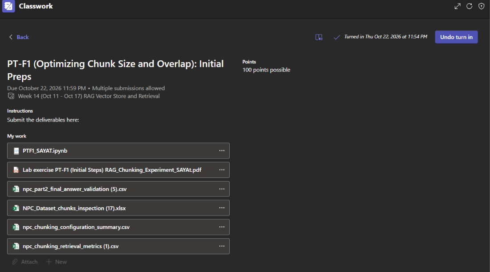

This activity focused on preparing and testing a RAG-based chatbot using different chunk sizes and overlap settings. It involved reviewing the notebook code, preparing test questions, and checking how well the system retrieves relevant information from the dataset. The activity also introduced the use of retrieval evaluation metrics to compare the results and identify suitable settings for the experiment.
Submitted Outputs
Microsoft Teams Submission Screenshot

PDF Report
Google Colab Notebook
Final Answer Validation
Dataset Chunks Inspection
Chunking Configuration Summary
Chunking Retrieval Metrics
Learning Reflection
Through this activity, I learned that preparing documents properly is important before building a RAG-based chatbot. I understood that the way information is divided into chunks can affect how the system finds and uses the needed details. Each section should contain enough information to keep its meaning clear and useful.
I also learned that experimenting with different chunk sizes and overlaps can help determine which settings work better for retrieving relevant information. This activity helped me understand why careful data preparation matters before storing and searching information in a vector database. It also gave me a better idea of how these steps contribute to building a RAG-based chatbot.